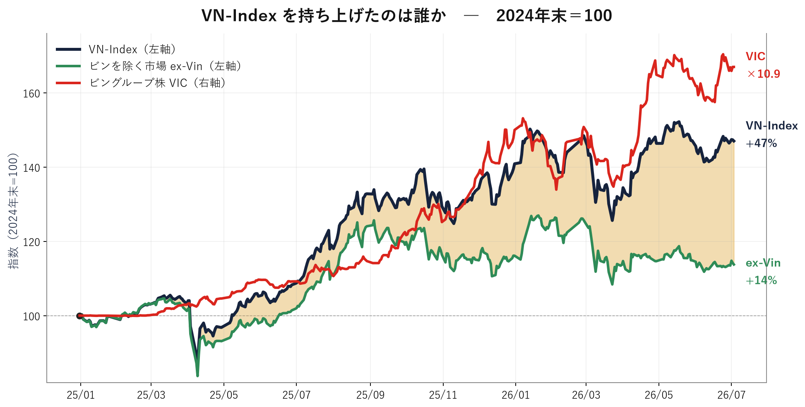

ベトナム最大級の企業グループ、ビングループ。その事業構造は、創業者ファム・ニャット・ヴオン氏の経営哲学を色濃く映す。
グループの収益基盤は不動産だ。住宅、商業施設、リゾート、都市開発を手掛け、経済成長と都市化の波を取り込んできた。そこで生み出した資金を、教育、医療、観光、そして電気自動車（EV）へ振り向ける。ビングループを理解するうえで重要なのは、この「不動産で稼ぎ、新規事業に投資する」循環である。
ヴオン氏は1968年、ハノイ生まれ。旧ソ連のモスクワ地質探査大学を卒業後、ウクライナでインスタント麺事業を始めた。ブランド「Mivina」は現地で広く浸透し、事業会社テクノコムを食品大手ネスレに売却したことで、ベトナムでの事業展開に必要な資本を得た。
帰国後に注力したのが不動産だった。2003年にリゾート事業「ビンパール」、2004年に商業施設事業「ビンコム」を立ち上げた。当時のベトナムでは、近代的な大型商業施設や高級リゾートの供給は限られていた。都市部の所得上昇と消費拡大を見込み、住宅、商業、観光を一体で開発するモデルを構築したことが、現在の成長基盤につながっている。
ただ、投資家の視線は不動産よりもEV事業「ビンファスト」に向かう。ビンファストは2017年に設立され、ベトナム企業として初めて本格的な世界市場向けEVメーカーを目指す。米国ナスダック市場への上場も実現したが、工場建設、車種開発、販売網整備、価格競争への対応には多額の資金が必要となる。
EV事業は、ビングループにとって成長の選択肢であると同時に、最大の資金負担でもある。自動車産業では、販売台数の拡大だけでは収益化につながらない。生産規模、部品調達、品質、ブランド力、アフターサービスまで含めた競争力が問われる。世界のEV市場では価格競争も激しく、黒字化までの道のりはなお見通しにくい。
ヴオン氏は2024年にビンファストの最高経営責任者（CEO）に就任し、EV事業への関与を一段と強めた。創業者自らが前面に立つことは、意思決定の速さという強みになる。一方、巨額投資を伴う事業だけに、グループ全体の資本配分を巡るリスクも高まる。
ビングループの投資判断は、不動産事業の成長性だけでは完結しない。不動産が生むキャッシュフローを、EV事業がどの程度吸収するのか。そしてEVがいつ、どの規模で資金を生み出す事業へ転じるのか。この二点が、グループの企業価値を左右する。
「ベトナムの都市化」を取り込む不動産と、「世界のEV市場」に挑むビンファスト。二つの事業は対照的だが、いずれもヴオン氏の成長志向を象徴する。ビングループは今、不動産企業から総合企業グループへ、さらに世界市場を狙うモビリティ企業へと変貌できるかという岐路に立っている。
| 会社 | 事業 | 市場 | 売上高（FY25） | 時価総額 | PER | PBR |
|---|---|---|---|---|---|---|
| VIC／ビングループ | 持株・親会社 | HOSE | 約2.1兆円 | 約10.5兆円 | 145.8x | 11.4x |
| VHM／ビンホームズ | 不動産（開発） | HOSE | 約9,490億円 | 約3.8兆円 | 9.5x | 2.4x |
| VFS／ビンファスト | EV | 米ナスダック | 約5,900億円 ※ | 約1.1兆円 ※ | 赤字 | — |
| VPL／ビンパール | 観光 | HOSE | 約960億円 | 約0.97兆円 | 61.9x | 4.1x |
| VRE／ビンコムリテール | 商業施設 ※ | HOSE | 約550億円 | 約4,000億円 | 9.3x | 1.3x |
| VEF／VEFAC | 展示会場・不動産 | UPCoM | 約2,800億円 ※ | 約900億円 | 1.0x ※ | 2.1x |
週次+6.10%でVN30の値上がり首位、指数寄与+1.8ptは単独銘柄で最大の押し上げ。外国人も週間+128十億ドンと買い越しで、上げに実需が伴う。背景は銀行セクター全体の増資・配当ラッシュ（KienlongBank 29.5%株式配当・VPBank定款資本106兆ドン・BIDV私募10.2兆ドン調達など）と6月の銀行業種指数+2.2%の地合い。時価総額は約135兆ドン（約8,400億円）。
WHY NOW?——銀行全面高の「象徴」。7月中旬からのQ2決算シーズンで、株価が先行した分の業績裏付けが試される。
週次+3.60%でVN30の3位。金曜7/3には中堅証券（MBS+4.88%・BVS+5.63%等）が軒並み3〜6%高となり、証券セクター（+3.6%）が週間首位——その中核がVN30唯一の証券株SSIだ。FTSE新興国格上げ（9/21発効）で売買代金・信用取引・手数料が構造的に増える証券は最大の受益業種とされる。時価総額は約80兆ドン（約4,900億円）。
WHY NOW?——8/21のFTSE最終構成リスト（あと約7週）が先回り買いの試金石。リスト確定までこの物色は続きやすい。
USTRの強制労働Section 301調査（対ベトナム関税12.5%案）のパブコメ期限が本日7/6、公聴会が7/7に迫る。知的財産のSection 301も同日がコメント期限。既存の対米20%＋転送（トランシップ）40%関税に上乗せの可能性があり、Q2決算シーズン入りの地合いを圧迫する。なお現時点では「提案」段階で発効しておらず、税率・対象は公聴会後に変わり得る。
統計総局が7/3発表。Q2は前年比+8.39%（推計）、上半期+8.18%は20年超で最高。製造業付加価値+10.23%が牽引し、6月CPIは+4.69%へ鈍化、PMIは51.8と業況改善が続く。ただし上半期は166.5億ドルの貿易赤字に転落しており、当局は「通年二桁成長には下半期+11.7%が必要」と自ら警告する。
7月1日、29法・2条例・34政令が一斉施行。ベトナム初の包括的EC法（ライブコマース規制・本人確認義務）、金地金取引への0.1%課税、世帯事業者の非課税枠5億VNDへの引上げ、建築許可免除の拡大、条件付き業種の198→142削減など、企業実務に直結する変更が広範に入った。
7/3にイオンモール・ダナン・タインケーが開業（ダナン初・専門店約54店・雇用約1,700人）、同モールにユニクロのダナン1号店も出店。7/2にはJBIC前田総裁がフン首相と会談し、AZEC枠組み15案件（約200億ドル）の進捗を確認。上半期FDIは登録346.5億ドル（+61%）で、日本は12億ドル・第3位。中部の消費市場と対越投資の裾野が同時に広がっている。